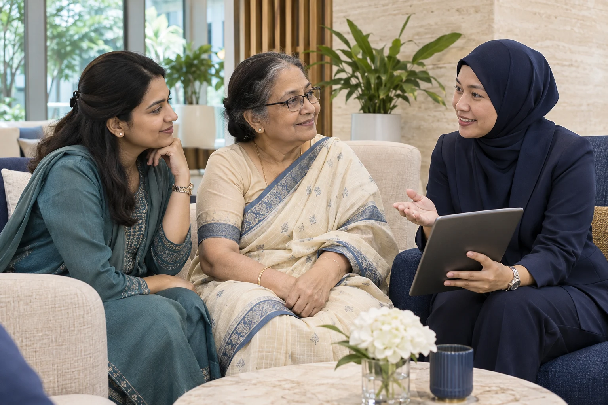

FROM BANGLADESH TO MALAYSIA
Every step.
A little more clarity.
Explore how we can help before travel, on arrival, during your stay and after you return.

Illustrative sceneBEFORE YOU TRAVEL
A little clarity.
A calmer departure.
Begin with a conversation. We help coordinate hospital enquiries, appointment requests and estimates before you make travel plans.
- Hospital enquiry and report coordination
- Appointment and estimate requests
- Visa document preparation support
BEFORE YOU SET OFF
A calmer
departure.
Use this checklist to prepare for a conversation with your coordinator. Your hospital may request additional information.
0 of 6 planning steps checkedA planning aid only. Your selections are not saved or sent.
Questions along the way.
When should I book flights?
Coordinate travel after the hospital arrangements and entry requirements are confirmed. Ask the clinical team about fitness to travel when needed.
Can someone travel with me?
Tell the coordinator who is accompanying you so accommodation and transport can be planned around your family.
What happens if the treatment plan changes?
Ask the hospital for an updated explanation, estimate and timeline. We can help coordinate changes to agreed practical arrangements.
What happens after I return?
Follow the treating team’s instructions and confirm the follow-up appointments they recommend. We can help coordinate those enquiries.